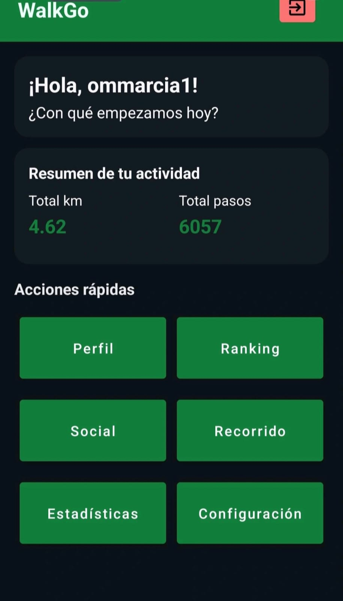
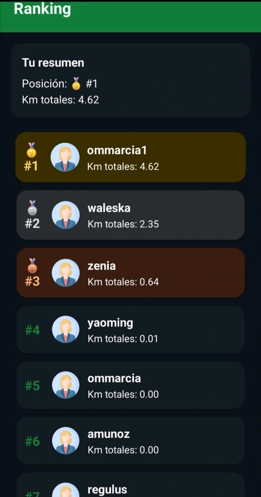
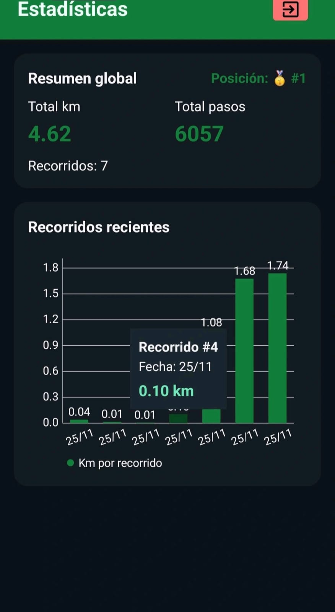

WalkGo
A fitness tracker ecosystem focused on walking/running stats, user profiles, and rankings.



Highlights
- Profile + stats experience designed for fast “at-a-glance” progress.
- Backend API structure with authentication and clean data boundaries.
- Expandable foundation for friends/rankings and future analytics.
Problem → Solution
Tracking a record without competition can sometimes be boring, therefore this application was created with the sole purpose of providing a ranking system that will encourage users to test against each other in walking sessions.